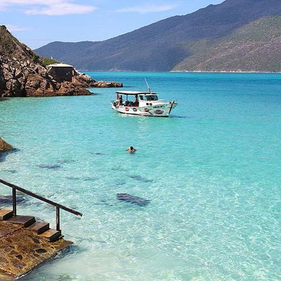

BRASIL

O Brasil, um vasto país sul-americano, estende-se da Bacia Amazônica, no norte, até os vinhedos e as
gigantescas Cataratas do Iguaçu, no sul.
O Rio de Janeiro, simbolizado pela sua estátua de 38 metros de altura do Cristo Redentor,
situada no topo do Corcovado, é famoso pelas movimentadas praias de Copacabana e Ipanema.
Bem como pelo imenso e animado Carnaval, com desfiles de carros alegóricos, fantasias extravagantes e samba.
Rio de Janeiro
PRAIA BRAVA
Não se deixe levar pelo nome, a Praia Brava em nada lembra um ambiente pouco acolhedor. Muito pelo contrário! É provável que ela seja uma das mais convidativas porções de areia de Búzios, na Região dos Lagos do Rio de Janeiro. A bela paisagem do mirante na estrada que leva à Brava já seria motivo suficiente para atrair os turistas até lá, mas ela vai muito além e oferece um mar maravilhoso, ambiente sempre tranquilo, areia vazia e dois dos mais elegantes bares à beira-mar da cidade. Certamente uma das praias mais bonitas do Brasil!
Paraíba
JOÃO PESSOA
A capital paraibana tem uma orla gostosa para caminhar,
piscinas naturais formadas no período de maré baixa e uma gastronomia
maravilhosa, que só nosso Nordeste é capaz de oferecer!
E quem visita o lugar ainda pode aproveitar para
conhecer outras praias da Paraíba, como Tambaba, ou aproveitar o
São João, uma festa muito importante por lá.
QUERO CONHECER ESSE LUGAR !